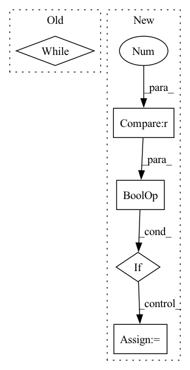

Pattern ID :8087
Before Change
instruments = [pm.Instrument(i) for i in range(128)] \
+ [pm.Instrument(0, is_drum=True)]
current_time = 0
while roll[0] > 255:
roll = roll[1:]
roll = [roll[i * 7 : (i + 1) * 7] for i in range(0, len(roll) // 7)]
for step, event in enumerate(roll):
if event[0] == 1025:After Change
break
if event[0] == 129 or 128 in event[1:]:
continue
if event[0] == 131 or 130 in event[1:] :
continue
instrument = event[0]
pitch = event[1]
velocity = event[2]
dur = event[3] * 128 + event[4]
delta = event[5] * 128 + event[6]
instruments[instrument].notes.append(In pattern: SUPERPATTERN
Frequency: 3
Non-data size: 5
Instances Fragment ID: 28655493
Project Name: rick-mccoy/reformer-pytorch
Commit Name: 3411114d22e0bfcae2e106f5c82a3211da83f409
Time: 2020-02-29
Author: rickmccoy3141@gmail.com
File Name: datasets/music.py
M Class Name: AnonimousClass
N Class Name: AnonimousClass
M Method Name: roll_to_midi(1)
N Method Name: roll_to_midi(1)
M Parent Class:
N Parent Class:
M File Name: datasets/music.py
N File Name: datasets/music.py
M Start Line: 38
M End Line: 66
N Start Line: 44
N End Line: 60
Before Change
// recv for fwd
for obj in request_objects:
// print(f"-I- {self.stage} waiting on rcv")
while (not obj.is_completed()):
pass
// obj.wait()
// print(f"-I- {self.stage} DONE waiting on rcv")
After Change
self.fwd_rcev_buffers.create()
recved_all = False
if self.fwd_rcev_buffers.first_rcv_after_created or self.fwd_rcev_buffers.max_buffers == 1 :
self.fwd_rcev_buffers.recv_all(batch_idx, num_batches)
recved_all = True
x = self.fwd_rcev_buffers.wait_first()
x = self.comm_handler.fix_after_recv(x) Fragment ID: 28655497
Project Name: saareliad/ftpipe
Commit Name: c5d99022b6a12748aff63f8f1a3931050b7a1d1a
Time: 2020-01-09
Author: saareliad@campus.technion.ac.il
File Name: pipeline/partition_manager.py
M Class Name: SinglePartitionManager
N Class Name: SinglePartitionManager
M Method Name: run_batch_forward(4)
N Method Name: run_batch_forward(4)
M Parent Class:
N Parent Class:
M File Name: pipeline/partition_manager.py
N File Name: pipeline/partition_manager.py
M Start Line: 156
M End Line: 172
N Start Line: 157
N End Line: 177
Before Change
// recv for bwd
for obj in request_objects:
while not obj.is_completed():
pass
// obj.wait()
// TODO: maybe a different fix for gradients?After Change
self.bwd_rcev_buffers.create()
recved_all = False
if self.recv_all_bwd or self.bwd_rcev_buffers.first_rcv_after_created or self.bwd_rcev_buffers.max_buffers == 1 :
self.recv_all_bwd = False
self.bwd_rcev_buffers.recv_all(batch_idx, num_batches)
recved_all = True
// TODO: need to detach and zero grad!
// // Solution to the DAMN bug with 4 partitions. Fragment ID: 28655496
Project Name: saareliad/ftpipe
Commit Name: c5d99022b6a12748aff63f8f1a3931050b7a1d1a
Time: 2020-01-09
Author: saareliad@campus.technion.ac.il
File Name: pipeline/partition_manager.py
M Class Name: SinglePartitionManager
N Class Name: SinglePartitionManager
M Method Name: run_batch_backward(3)
N Method Name: run_batch_backward(2)
M Parent Class:
N Parent Class:
M File Name: pipeline/partition_manager.py
N File Name: pipeline/partition_manager.py
M Start Line: 247
M End Line: 310
N Start Line: 247
N End Line: 315